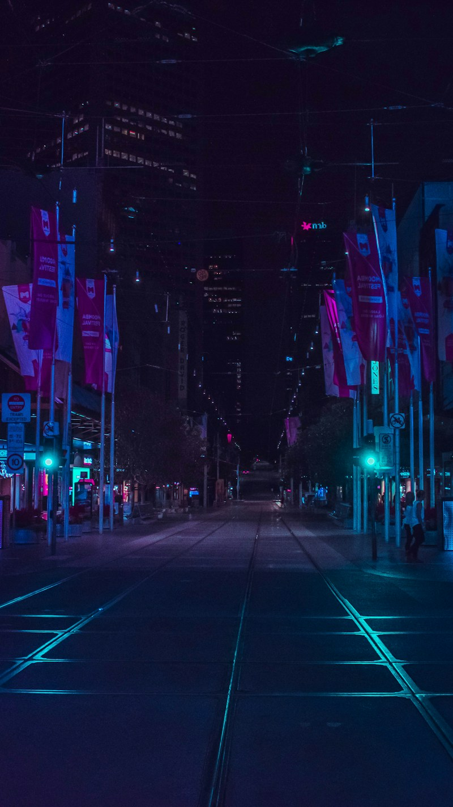

A little thought. Endless possibilities.
Good ideas.Made REEL.
The stuff in your head deserves
a life outside it.
YOUR IMAGINATION, IN MOTION
Meet your creative playground
From your head.
To their feed.
That half formed thought. That what if.
Give it a story. Give it a sound. Give it a reel.
✳ Less overthinking. More making.
FROM A LITTLE IDEA
TO THE BIG SCREEN.
THE ONE IN YOUR HAND.

9:41
Reference reel
CREATIVE FILM REFERENCE
The detail.
The whole story.
y.yap.references Campaigns & product studies.
A little inspiration for your next idea.
Attributed film reference
An idea, out in the world.
The possibility reelDrag to explore ↔
For the thought that won't leave you alone.
You don't need a big production.
You need an idea you can't let go of.
A shorter distance from what if to here it is.
Stay in the idea.
We'll meet you there.
THOUGHT → STORY → REEL
yap.A LOOK INSIDE THE IDEA
EVERY REEL STARTS SOMEWHERE.
A love letter to the city
after everyone goes home.
Give this idea a life.
THE SETTING
THE FEELING
THE MOMENT
Three moments. One little world.
Out of your head.
Into the world.
Illustrative product conceptIDEA / 01
You know that idea?
Yeah. That one.
A creative playground for whatever's on your mind.